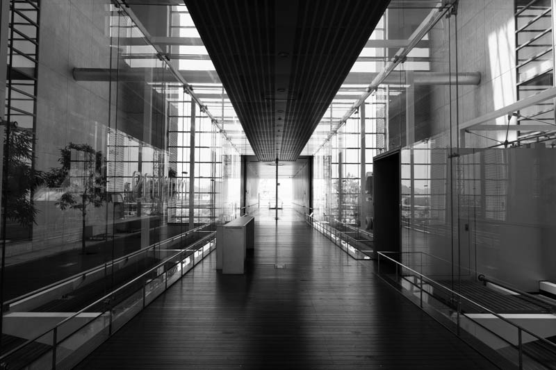

写真は○○でしかない（それと広島旅行の話）
2024/08/01
あなたにとって写真とは
「あなたにとって写真とは」これ聞かれると正直困ります。っていうより困ってました。困りながらも言語化する義務的なものに振り回されて（言語化ハラスメント）前までは「写真撮ってること自体が楽しいから！」と答えていたしそう思っていました。だけどなんだか腑に落ちないなぁとも思ってたりって感じです。だってそれなら撮った写真を共有する必要なんてないし、なんならカメラじゃなくてもできるし。みたいな。
でも最近やっと気づいたんですよ、写真撮るのって「楽だから」でしかないよな、って。
なので今回はそれに気づいた経緯とか話しながら最後には広島旅行の話でもしていこうかなと思っています。（文脈めちゃくちゃで草）
写真撮る理由は「楽だから」
楽だからってどういうこと？そう言いたいのは分かります。もっとなんか「瞬間を残したい」とか「人に感動を与えたい」とかなんだか素敵な理由を予想された方には申し訳ないですが、違います。もちろんそんなこと言える行動が伴っていれば良いんですがなんか辻褄が合わないんですよね、これ以外でも普段から何か理由や動機を言語化するときに矛盾が生じてしまうとモヤモヤしてしまうしなんだか本当にそんな綺麗に説明できてしまっていいのだろうかという気にもなります。
そんな言語化に厳しい自分（そんなこともない）が「楽だから写真を撮る」に納得した理由を3つの観点から説明しようと思います。1つ目は歴史的背景から、2つ目はスマホかカメラか論争から、3つ目は言語化的な視点から（？）っていう感じで話していきます。
1.歴史的にも写真は楽するもの
芸術についてある程度ご存じの皆さんなら皆まで言うな...みたいな状況だと思いますが、歴史で写真が絵描きの仕事を奪っていったみたいな話ありますよね。あの流れって、絵描き「この状況残さねば！」→絵を描く→発明家「カメラ作ったったw」→絵描き「秒で記録できんじゃん」、みたいな正確で速い記録手段的なんで写真が出てきたってのがありましたよね。（詳しくはメディア論の授業を受講してください（個人的には神授業でした））ってなると歴史的にも何か伝えたり残す時に写真は圧倒的に楽な手段ですよね。これって現代の写真でも同じで、結局今の状況を共有したり自分の見ている世界観を楽して共有するってなった時に絵描く人も文章綴る人もいるけどやっぱ写真撮ってぺって載せるのが楽じゃないですか？
2.スマホとカメラは楽できるタイミングが違うだけ
最近ではあんまり議論されないかなって感じですが、スマホで撮るとかカメラで撮るとか、なんならAIで生成するとかなんかもう写真周りの話って色々あるじゃないですか。私的にはもう結論があって、「アウトプットに優劣はなく、工程のウェイト感が違うだけ」だと思うんですよね。もう少し言うと、例えばスマホとカメラで比較するとスマホは持ち歩くときは楽だけど現像でなかなか思ったイメージに持っていきにくい、対してカメラは持ち歩くときは煩わしいけど現像ではイメージに持っていきやすい、みたいなどこで楽してどこで苦しむかって話だと思うんですよ。ってなると写真に対して楽がしたい私的には重くても高くても、表現の自由度が高いカメラを買って（もちろん許す範囲で）持ち歩いて、現像はどうとでもなりま～すみたいな方が心的に楽ですね。ダイナミックレンジの広さ＝心の広さと言っても過言ではないですよ...
3.「楽だから」ってなんか良くない？
これ写真に限らない話なんですが個人的には何かを始める動機とかって大義名分よりも、くだらない理由とかの方がいいなと思っちゃいます。いやまぁもちろん大きな志がある分には良いことだとは思うんですが、大きなこと言う割には行動との整合性が無いとか皆が綺麗ごと並べるよりかは素敵だなぁとは思ったりです。あと強いて言うなら「楽」って「楽しい」みたいなニュアンスもあるって言えるじゃないですか、なのでこれで良さげだなって笑。（なにわろてんねん）
写真を撮る理由って（改めて）
最後は雑な言語化になってんなぁって感じでしたがいかがでしょうか。これで今まで聞かれた「あなたにとって写真は？」に一応の答えは出せたんかなとは思う次第です。写真好きな人がいてもしこの文章読んでる人がいたら聞いてみたいですね、写真を撮る理由。
写真の話は散々したのでタイトルにもある通り広島旅行の写真でも載せておきます。行った場所としてはしまなみ海道の展望台、伊藤豊雄ミュージアム、大山祇神社、耕三寺、未来心の丘、ONOMICHI U2、千光寺公園、リボンチャペル、禅と庭のミュージアム、広島市環境局中工場、原爆ドーム、平和記念資料館、おりづるタワー、世界平和記念聖堂、下瀬美術館、厳島神社を5日間で回ったって感じです。ではどうぞ、
以上です。この写真を用意しながらも言葉であれこれ言うより写真でどこ行ったか見てもらう方が楽だなぁ～とか思いながらコーディングしていました。そう思うと旅行中に「建物の静態写真なんかとっても仕方ないだろ！！」とか言ってた自分を恨みます、もっと撮っとけよ分かりやすいやつ。
広島の写真を含め、皆さんが写真を見るたびに、撮るたびに「楽してんなぁ～」って思ってもらえると面白いかなと思います、人によるけどね。